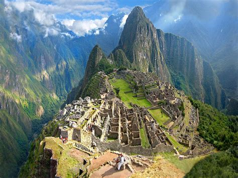

machu picchu

machu picchu es una de las ocho maravillas del mundo, por su construccion, su funcionabilidad, y por sus avanzados conocimientos
machu picchu fue uno de los aposentos del inka, que era la maxima autoridad para esa cultura.
caracteristicas
- construcion
- funcionamiento
- conocimientos avanzados
1. contruccion
- usaron piedra enormes
- no necesitaron ningun pegamento (las piedras encajaron perfectamente)
- implementaron un sistema sanitario
2 funcionamiento
- su arquitectura tiene un diseño unico, que permitia que toda la ciudad se alimentaran del agua
- hicieron una conexcion subterranea que se alimenta de agua potable inexplicable
- la luz del sol fue su fuente de energia que tenia sinergia con la arquitectura
3 conocimientos avanzados
- tenian conocimiento de la astronomia sin uso de telescopios
- tenian conocimiento de ingenieria avanzada que hasta la fecha no se puede implementar
- sistemas matematicos avanzados
enlaces de interes